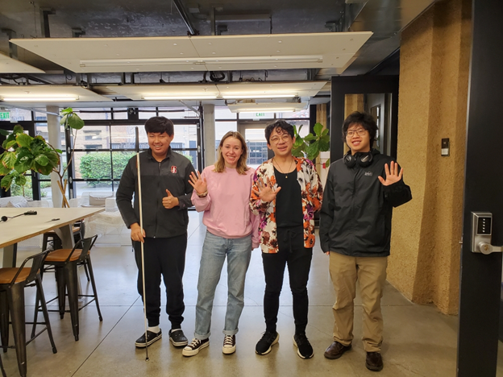
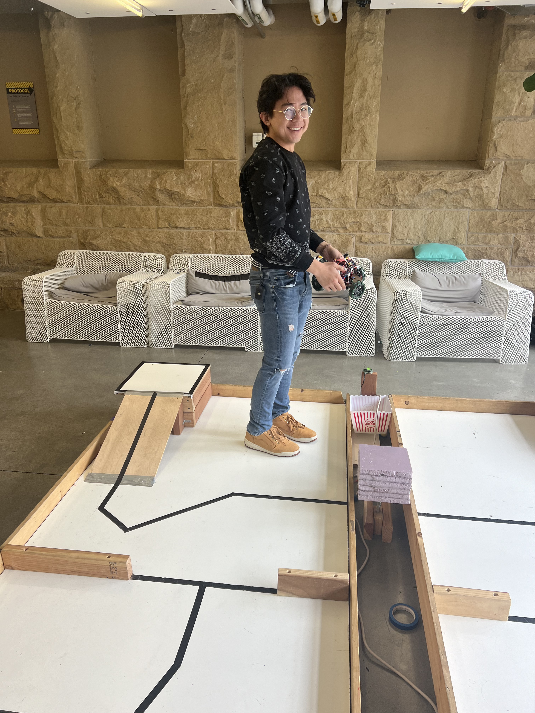
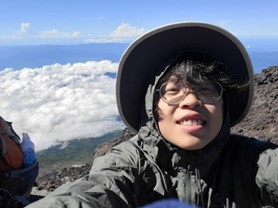
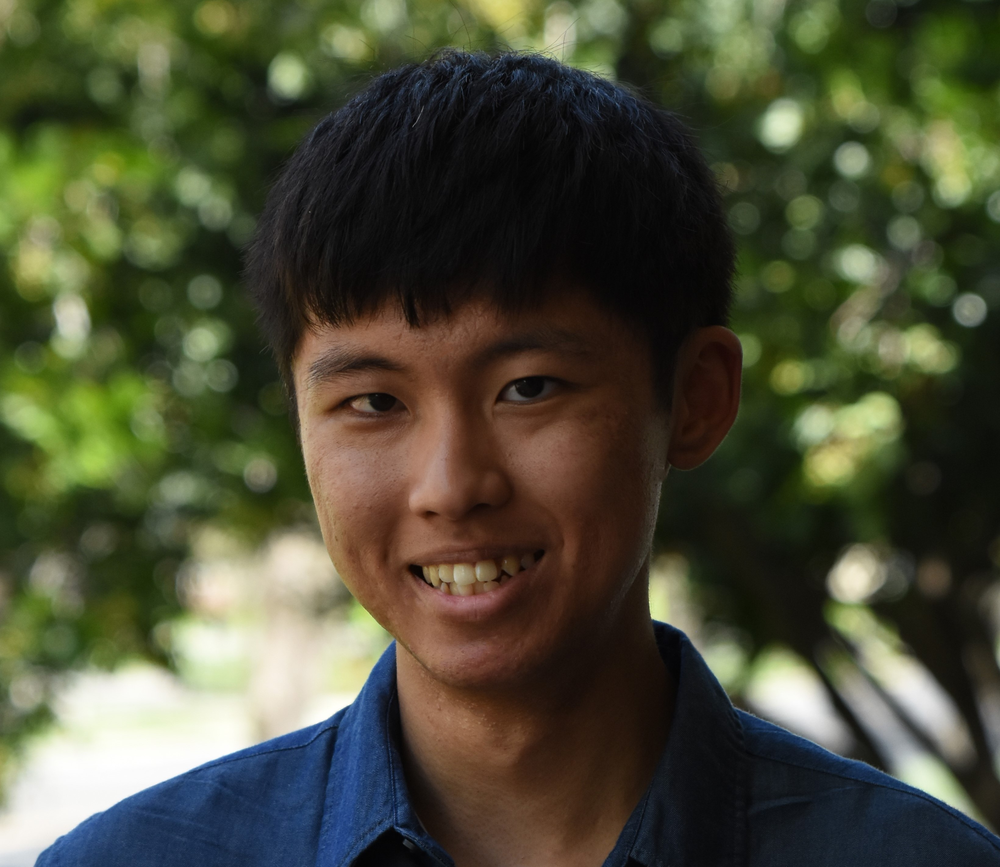

Welcome to our project page
This website documents our journey through completing Stanford's Introduction to Mechatronics (ME 210) final project. Our task was to build a robot in three weeks that could autonomously navigate through a track, make physical contact with a designated contact zone area, and depart at least one dart into a basket. Read below to learn more about our team members, use the navigation links in the menu to learn more about our process, and check out this project's github page!
Meet Our Team
Coco Layton
Coco is a junior studying Electrical Engineering with a concentration in hardware and software. She is from Palo Alto, CA and likes sweet treats.

Liam Ramos
Liam is a senior studying Mechanical Engineering in the product realization concentration. He is from Manila, Philippines. Likes steak. Has been driving with a vent window for 4 weeks. He actually bought this car from Dylan!

Dylan Win
Dylan is a junior studying Mechanical Engineering with a concentration in dynamics/control systems. He is from Virginia Beach, VA and sold his car from Virginia to Liam!

Gene Kim
Gene is a senior studying Symbolic Systems, concentrating in HCI and Accessibility. He is originally from Cupertino, CA. He works on research to make data visualization, engineering education, and personal fabrication more accessible to blind and low vision individuals.